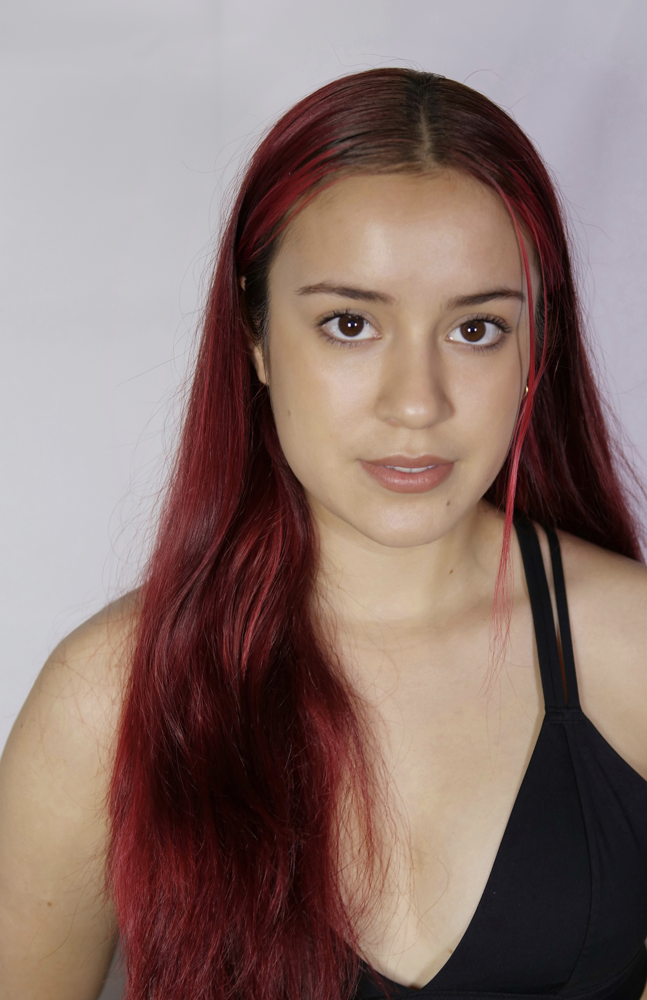

“My approach to creating is visual and unapologetic, as I invite the viewer into worlds that reflect my personal vivid dreamscapes. I use intricate contemporary movement on dancers, film, projection mapping, and lighting design to bring a sense of fullness to these worlds. They often come off as bright and neon but have dark personal meaning to them. My work seeks to investigate, confront an audience, and evoke emotion. I first see shapes that become the formation of a body of dancers and then produce the movement that fills in these larger shapes using both the feeling of the specific world and music as a guide. The sensation of the movement roots from a visceral feeling, every movement and gesture being in relationship to the dancer’s center. I depend on shapes, neon colors, texture, and rhythm as a way to communicate my narrative to the performers and the viewers. Selfishly, by having the experience of getting to work with a group of artists to transcribe a vision, I am able to process my dreams that reference the reality I’m processing as well. I’m interested in combining this dreamscape aesthetic with an investigation of my Mexican American heritage, and how that can spark conversations about being Latina in the dance world. I’m exploring my identity while prioritizing giving space to other artists to explore their own. Through my choreographic and visual artwork, I aspire to represent women of color.”
